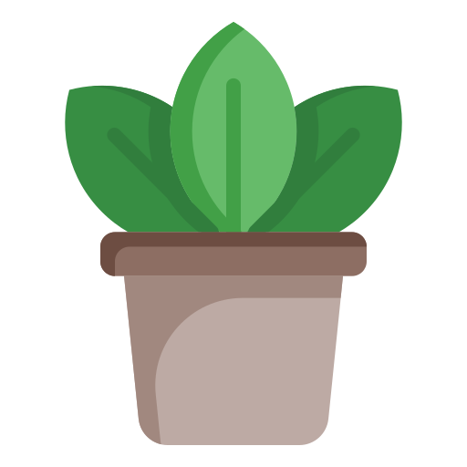

Box 3 -WiCHacks Plant Site
By Emma, Aemilia and Amelia. The 3310 roomies!
Dark Green
Light Purple
Light Green
Tan
Brown
BACK TO INDEX
1 / 3

Green Succulent
2 / 3
Rose
3 / 3
Sunflower
❮
❯
Attributions
Flower icons created by Freepik - Flaticon
Valentine icons created by Freepik - Flaticon
Plant pot icons created by gungyoga04 - Flaticon